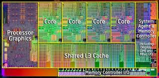
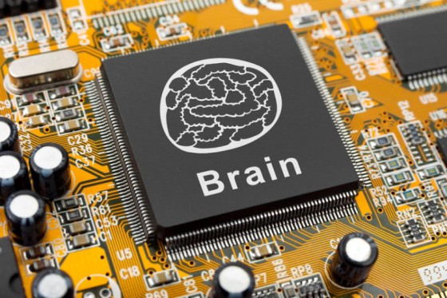
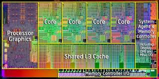
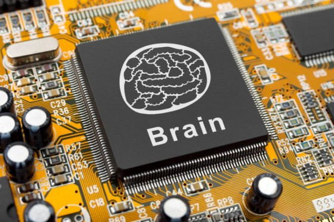
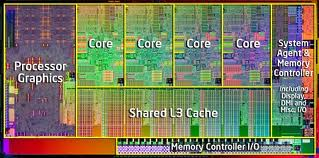
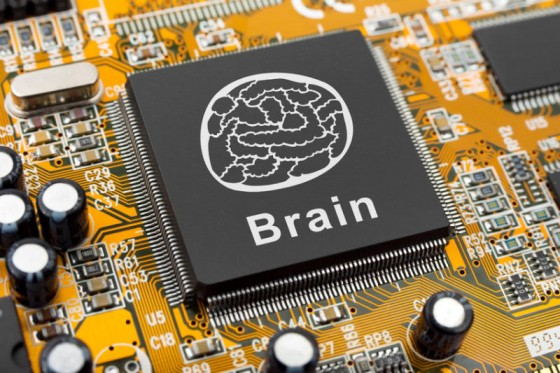

这能实现吗？
什么时间能实现呢？
死之前还能赶的上吗？
屌丝也能吗？
很抱歉现在不能给个答案。 我觉得这个工程，分为两个主要点。
1.人脑的数字化。
2.计算机的性能提升。
3.成本的问题。
关于第一点，我个人不熟悉，需要调查。可能难度会比较大。 关于第二点，我觉得再过20年计算机的性能完全没有问题。 关于第三点，草根共享草根分享，不要被所谓精英控制，你就会用的起。 学习比特币模式，不过最近貌似也被冒险精英们控制了，很悲伤。

 



很抱歉现在不能给个答案。 我觉得这个工程，分为两个主要点。
1.人脑的数字化。
2.计算机的性能提升。
3.成本的问题。
关于第一点，我个人不熟悉，需要调查。可能难度会比较大。 关于第二点，我觉得再过20年计算机的性能完全没有问题。 关于第三点，草根共享草根分享，不要被所谓精英控制，你就会用的起。 学习比特币模式，不过最近貌似也被冒险精英们控制了，很悲伤。

